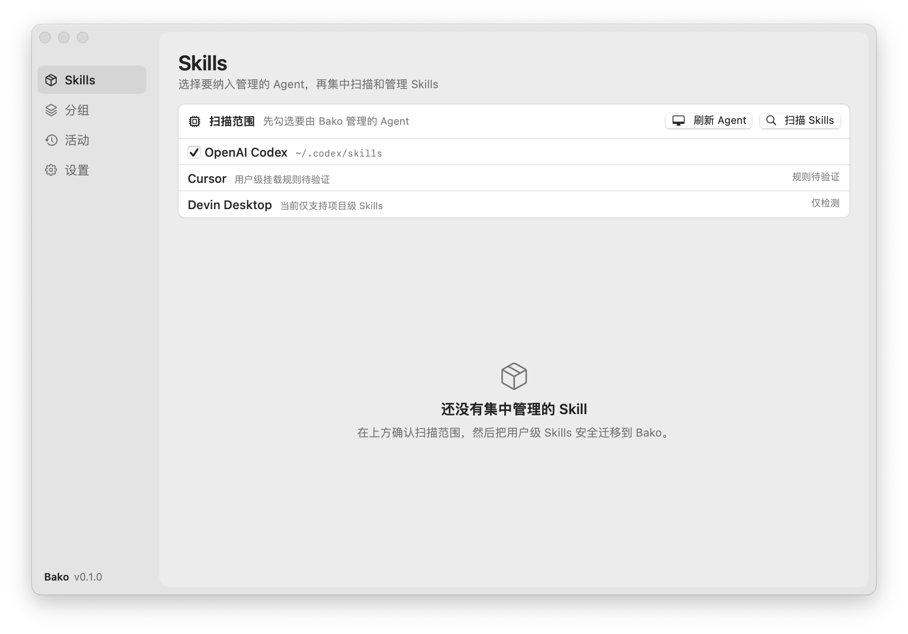
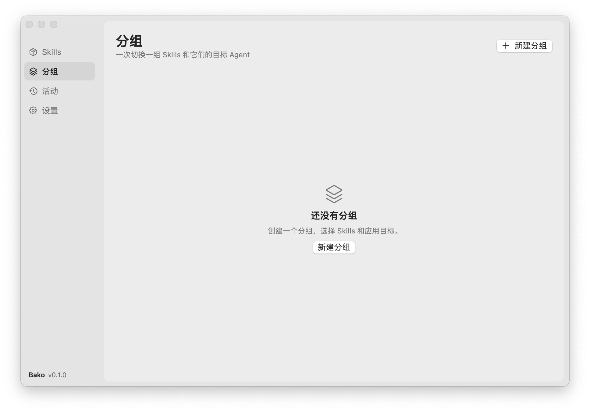

集中管理
自动发现多个 Agent 的用户级 Skills，统一收纳到中央存储，来源目录仍可照常访问。
把散落在各个 AI Agent 目录里的 Skills 集中起来。安全迁移、智能去重，再用分组一键切换你的工作流。
Bako 理解 Skills 的目录结构和不同 Agent 的挂载规则，把繁琐的文件操作变成清晰、可恢复的工作流。
自动发现多个 Agent 的用户级 Skills，统一收纳到中央存储，来源目录仍可照常访问。
将一组 Skills 与目标 Agent 绑定。在主窗口或菜单栏中，一次启停整个工作场景。
基于 SHA-256 内容指纹去重，事务日志支持异常恢复；不覆盖真实文件或外部链接。
选择需要管理的 Agent，Bako 会扫描它们的用户目录、共享目录和你添加的自定义来源。迁移前明确确认范围，异常链接只报告、不接管。

“前端开发”“内容创作”或“代码审查”——每个分组自由选择 Skills 和目标 Agent。多个分组同时启用时，Bako 自动计算并集并对账链接。

SwiftUI 构建，支持中英文界面和菜单栏快速操作。
没有账号与云同步；状态保存在本机 SQLite 数据库中。
可将中央 Skills 恢复到共享目录，并重定向已知链接。
集成 Sparkle，安装后可在应用内检查并获取后续版本。
免费下载 Bako。无需账号，所有管理都在你的 Mac 上完成。
获取最新版 ZIP 压缩包。
将 Bako.app 拖入 Applications。
当前版本未经过 Apple 公证，请右键点按 App 并选择“打开”。
提示 当前提供的是 ad-hoc 签名的内测版本。macOS 如仍阻止启动，请前往“系统设置 → 隐私与安全性”确认打开。请仅从本页面或 GitHub Releases 下载。